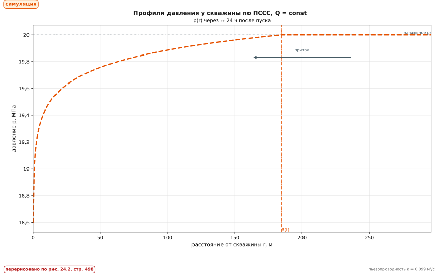

Стр. 497 · §1. Метод последовательной смены стационарных состояний
Плоскорадиальный неустановившийся фильтрационный поток упругой жидкости.
Неустановившееся движение упругой жидкости в упругом пласте. Метод ПСССШаг 54 из 60
В книге: «Плоскорадиальный неустановившийся фильтрационный поток упругой жидкости» стр. 497–498
Опирается на: шаг 46 «Где проходит условный фронт давления» (предпосылка), шаг 31 «Как задать пуск скважины» (предпосылка), шаг 47 «Галерея и линейный профиль давления» (пример)
Вокруг скважины с постоянным дебитом по ПССС растёт возмущённая зона радиуса R(t).
Внутри неё давление распределено по стационарному логарифмическому закону, снаружи равно pк.
Закон роста R(t) ещё предстоит найти.
Пороговая идея. Различать радиус скважины, координату точки и радиус возмущения. модель
Теперь автор рассматривает неустановившийся плоскорадиальный поток упругой жидкости. Так называют течение к скважине, где давление зависит от расстояния до её оси. стр. 497
«Плоскорадиальный неустановившийся фильтрационный поток упругой жидкости.»
Автор принимает допущения. Пласт неограничен, горизонтален и имеет постоянную толщину h. Добывающую скважину радиусом rс пускают в момент t = 0. Её дебит Q постоянен. стр. 497
«в момент времени $t = 0$ пущена добывающая скважина радиусом $r_c$ с постоянным дебитом $Q$.»
«Пусть в неограниченном горизонтальном пласте постоянной толщины $h$ в момент времени»
«пущена добывающая скважина радиусом $r_c$ с постоянным дебитом $Q$.»
До пуска давление во всём пласте одинаково и равно контурному pк. стр. 497
«До пуска скважины давление во всем пласте было одинаковым и равным $p_\kappa$.»
Через время t вокруг скважины выделяют возмущённую область радиусом R(t). Внутри неё давление распределено по стационарному закону. Это допущение ПССС для данного момента. стр. 497–498
«через время $t$ после пуска скважины вокруг нее образуется возмущенная область радиусом $R(t)$»
«в которой давление будет распределено по стационарному закону»
По формуле (24.10) p = pк − Qμ/(2πkh)·ln(R(t)/r). Депрессия в точке пропорциональна логарифму отношения R(t) к расстоянию r от оси. Чем ближе к скважине, тем больше депрессия. стр. 498
«$$p(r, t) = p_\kappa - \frac{Q\mu}{2\pi kh} \ln \frac{R(t)}{r}. \quad (24.10)$$»
В остальной части пласта сохраняется начальное давление pк. Рисунок 24.2 показывает такие профили в разные моменты при постоянном дебите. стр. 498
«В остальной части пласта сохраняется начальное пластовое давление $p_\kappa$.»
«Рис. 24.2. Кривые распределения давления в плоскорадиальном потоке в разные моменты времени по методу ПССС (отбор осуществляется при условии $Q = \text{const}$)»

Профиль зависит от неизвестного радиуса R(t). Поэтому нужно найти закон движения границы возмущённой области. стр. 498
«Требуется найти закон движения границы возмущенной области $R(t)$.»
В формуле три радиуса. rс — радиус самой скважины. r — точка, где смотрят давление. R(t) — докуда дошло возмущение. пояснение модели
Как записать профиль у скважины
Логарифмический профиль давления внутри зоны при постоянном дебите. стр. 498
| Обозначение | Что это | Единицы |
|---|---|---|
| $p$ | пластовое давление в рассматриваемой точке | Па |
| $r$ | расстояние от оси скважины | м |
| $t$ | время с начала отбора; dt — его малое приращение | с |
| $p_\kappa$ | начальное давление в пласте и давление на границе возмущения | Па |
| $Q$ | объёмный дебит жидкости | м³/с |
| $\mu$ | динамическая вязкость жидкости | Па·с |
| $k$ | проницаемость пласта | м² |
| $h$ | толщина пласта | м |
| $R$ | радиус возмущённой области | м |
Для расчёта «Постоянный дебит скважины: область и форма профиля» отделите исходные параметры от модельных выходов.
Как функция, включающая расчёт только внутри области интереса.
Где аналогия перестаёт работать: Рост области определяется физическим балансом, а не настройкой фильтра данных.
Не принимайте машинное описание рисунка за измерение; стройте теоретический профиль непосредственно по формуле.
Верный ответ: Пласт неограничен и горизонтален; Толщина пласта h постоянна; Дебит Q постоянен
Здесь задан постоянный дебит, а не постоянное давление на забое. Где это в тексте (стр. 497) →
Расставьте шаги записи профиля по порядку.
Перетащите пункты (мышью или пальцем за ⠿) или двигайте кнопками ↑ ↓.
Верный ответ: Зафиксируйте постоянный дебит Q и начальное давление pк. → Выделите вокруг скважины зону радиусом R(t). → В пределах зоны задайте логарифмический профиль (24.10). → За текущей границей оставьте начальное давление pк.
Сначала условия, затем зона, профиль внутри и давление снаружи. Где это в тексте (стр. 497) →
Верный ответ: От логарифма отношения R(t) к расстоянию r
В (24.10) стоит ln(R(t)/r). Где это в тексте (стр. 498) →
Все утверждения шага с дословной цитатой автора и страницей книги (по PDF).
Рассматривается неустановившийся плоскорадиальный поток упругой жидкости. наблюдение
«Плоскорадиальный неустановившийся фильтрационный поток упругой жидкости.»
Добывающую скважину запускают при t = 0 и удерживают постоянный дебит Q. допущение
«в момент времени $t = 0$ пущена добывающая скважина радиусом $r_c$ с постоянным дебитом $Q$.»
Пласт неограничен, горизонтален и имеет постоянную толщину h. допущение
«Пусть в неограниченном горизонтальном пласте постоянной толщины $h$ в момент времени»
Скважина имеет радиус r_c. допущение
«пущена добывающая скважина радиусом $r_c$ с постоянным дебитом $Q$.»
Начальное давление одинаково во всём пласте и равно контурному. допущение
«До пуска скважины давление во всем пласте было одинаковым и равным $p_\kappa$.»
Спустя время t в методе выделяют область вокруг скважины радиусом R(t). допущение
«через время $t$ после пуска скважины вокруг нее образуется возмущенная область радиусом $R(t)$»
Внутри текущей области давление принимают стационарным по пространственному профилю. допущение
«в которой давление будет распределено по стационарному закону»
Депрессия в точке пропорциональна логарифму отношения внешнего радиуса зоны к расстоянию от оси скважины. вывод
«$$p(r, t) = p_\kappa - \frac{Q\mu}{2\pi kh} \ln \frac{R(t)}{r}. \quad (24.10)$$»
На рисунке показаны профили давления в разные моменты при отборе с постоянным дебитом. наблюдение
«Рис. 24.2. Кривые распределения давления в плоскорадиальном потоке в разные моменты времени по методу ПССС (отбор осуществляется при условии $Q = \text{const}$)»
За пределами текущей области сохраняется начальное пластовое давление. допущение
«В остальной части пласта сохраняется начальное пластовое давление $p_\kappa$.»
Предстоит найти зависимость радиуса зоны от времени. наблюдение
«Требуется найти закон движения границы возмущенной области $R(t)$.»
Стр. 497 · §1. Метод последовательной смены стационарных состояний
Плоскорадиальный неустановившийся фильтрационный поток упругой жидкости.
Стр. 497 · §1. Метод последовательной смены стационарных состояний
Случай 1. Приток к скважине, на которой поддерживается постоянный дебит $Q$. Пусть в неограниченном горизонтальном пласте постоянной толщины $h$ в момент времени $t = 0$ пущена добывающая скважина радиусом $r_c$ с постоянным дебитом $Q$. До пуска скважины давление во всем пласте было одинаковым и равным $p_\kappa$.
Стр. 497 · §1. Метод последовательной смены стационарных состояний
В соответствии с методом ПССС принимаем, что через время $t$ после пуска скважины вокруг нее образуется возмущенная область радиусом $R(t)$, в которой давление будет распределено по стационарному закону
Стр. 498 · §1. Метод последовательной смены стационарных состояний
$$p(r, t) = p_\kappa - \frac{Q\mu}{2\pi kh} \ln \frac{R(t)}{r}. \quad (24.10)$$
Стр. 498 · §1. Метод последовательной смены стационарных состояний
Рис. 24.2. Кривые распределения давления в плоскорадиальном потоке в разные моменты времени по методу ПССС (отбор осуществляется при условии $Q = \text{const}$)
Стр. 498 · §1. Метод последовательной смены стационарных состояний
В остальной части пласта сохраняется начальное пластовое давление $p_\kappa$.
Стр. 498 · §1. Метод последовательной смены стационарных состояний
Требуется найти закон движения границы возмущенной области $R(t)$.
На этот шаг опираются: шаг 55 «Средняя депрессия в кольце вокруг скважины», шаг 57 «Давление в пласте и на забое», шаг 59 «Радиус по графику и дебит скважины».
Скважина с постоянным дебитом: логарифмический профиль
Ссылки в ответе ведут к исходному тексту.